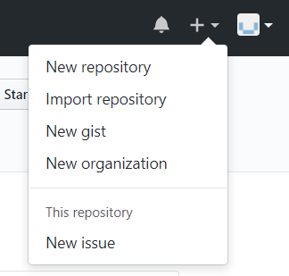
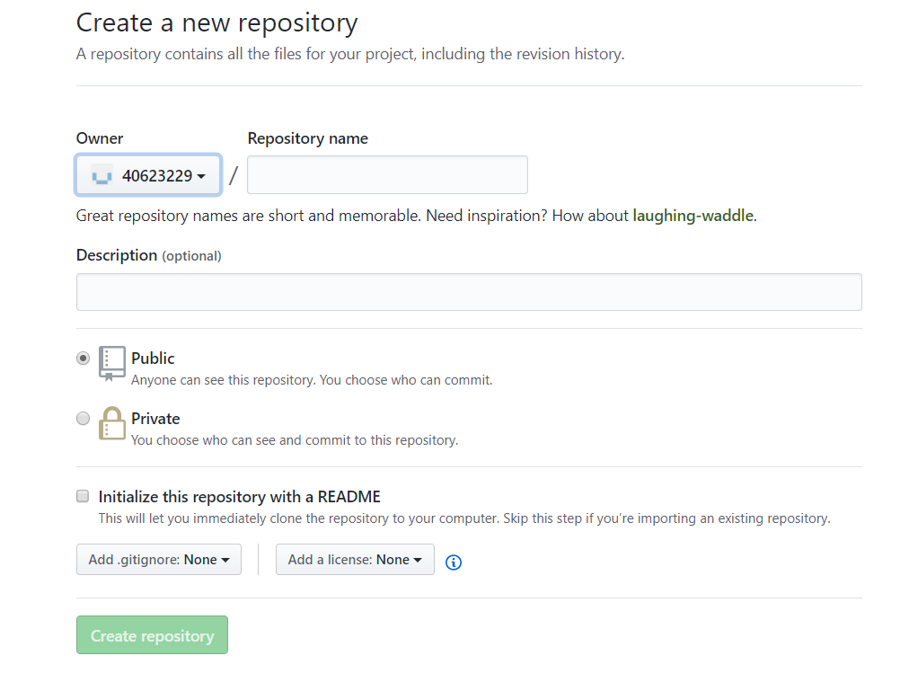
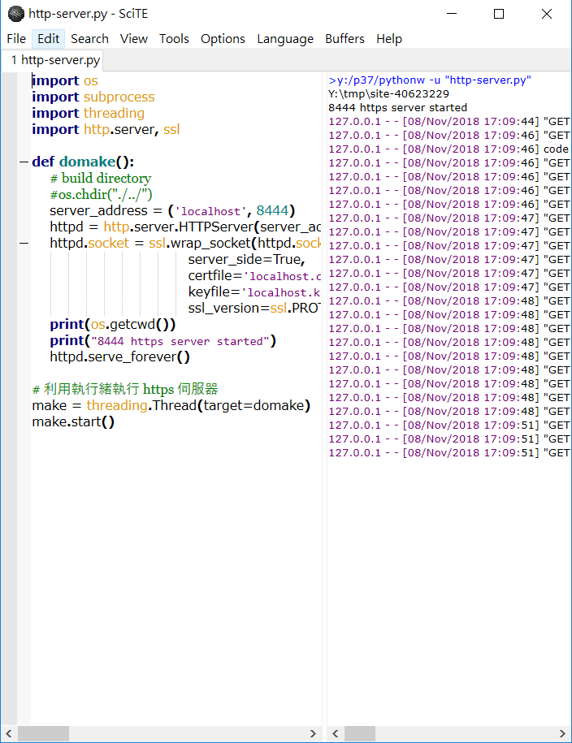

課程內容：
登入github帳號後，建立一個新的40623229.github.io的倉儲並可在近端的動態網頁去做修改。
操作步驟：
1.先將2018fall的倉儲clone下來。
2.登入github帳號後，在右上角有一個+的符號，點選New repository建立一個新的倉儲。

3.點選New repository後，在Repository name的地方輸入學號.github.io，設定完成後即可按Create repository完成建立。

4.將建立完的倉儲clone下來，就能在近端改版。
5.再將2018fall中除了.git的檔案之外的資料全部複製到40623201.github.io進行改版。
6.利用git add .將檔案新增上去，再利用git commit -m"initial add"提交之後，再git push將東西推上去。
7.利用git config進行身分綁定，也可以不綁定
9.利用http-server.py去Go它之後會在近端網頁（https://localhost:8443）看到改版之後的東西。

10.利用cd 4063201.github.io進到對應的倉儲後，用python wsgi.py的指令就可看到近端的動態網頁能進行修改。
11.修改後按網頁的generate_pages就能轉為靜態網頁了，再重複第6個步驟將東西推送上去。
課程影片